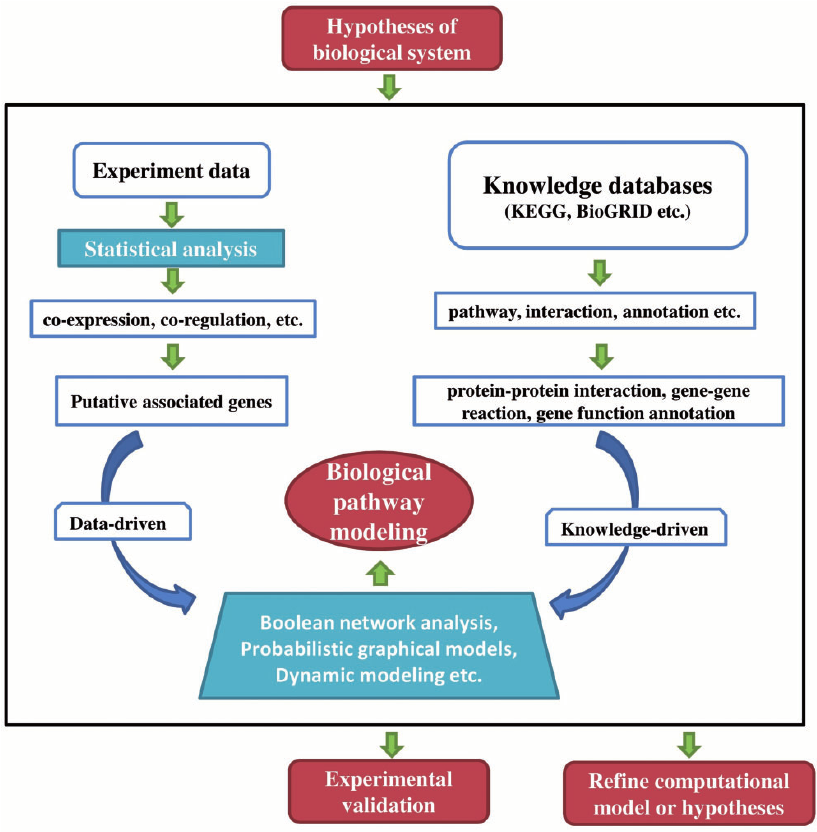

Photo by ThisisEngineering RAEng on Unsplash
Introduction to Biomedical Science: Unlocking the Mysteries of Health
Have you ever wondered how doctors figure out what’s wrong when we’re sick? Or how new medicines are created? That’s where biomedical science comes in — it’s the fascinating field that connects biology, medicine, and technology to help us understand our bodies and fight diseases.
What Exactly is Biomedical Science?
In simple terms, biomedical science is about using knowledge of biology to solve medical problems. Scientists in this field study everything from tiny viruses to how our cells work, aiming to find better ways to diagnose illnesses and develop treatments. They’re the detectives behind the scenes, working in labs, hospitals, and research centers, analyzing samples and unlocking health secrets.
Different Areas in Biomedical Science
Biomedical science is a big umbrella covering many exciting specialties. Here are some key branches you might find interesting:
| Branch | What It Focuses On |
|---|---|
| Clinical Biochemistry | Checking chemicals and markers in blood and fluids to spot health problems. |
| Microbiology | Studying germs like bacteria, viruses, and fungi that can cause illness. |
| Hematology | Looking at blood and blood disorders to help with diagnosis and treatment. |
| Histopathology | Examining tissues under microscopes to find signs of disease. |
| Immunology | Understanding how our immune system fights off infections and diseases. |
Biomedical Science in Everyday Life
You might not see biomedical scientists at work, but their impact is everywhere. Take the COVID-19 pandemic — behind every test kit and vaccine was a team of biomedical scientists racing to understand the virus and keep us safe.
Or think about cancer treatment. Thanks to biomedical science, doctors can now identify specific markers on cancer cells, tailoring treatments to each patient and improving survival rates. It’s like having a personalized health detective working on your case.
Source: Wikimedia Commons
Tools That Power Biomedical Science
Biomedical scientists use some pretty cool tech to do their work:
- Microscopes: From simple light microscopes to advanced electron microscopes, these let scientists see the tiny details of cells and germs.
- PCR (Polymerase Chain Reaction): This technique copies tiny bits of DNA, helping detect infections and genetic conditions quickly.
- Flow Cytometry: A method to analyze lots of cells quickly, often used to study blood or immune cells.
- Mass Spectrometry: Helps identify molecules in samples, useful for understanding diseases and developing drugs.
Studying Biomedical Science and Career Paths
If this sounds exciting, a career in biomedical science might be for you! Typically, people start with a bachelor’s degree in biomedical science or a related subject. From there, many choose to specialize or continue with research.
Biomedical scientists work in hospitals, research labs, universities, and pharmaceutical companies. Whether they’re running tests to help diagnose patients or developing new medicines, their work saves lives every day.
What Lies Ahead: Challenges and Innovations
Although biomedical science has come a long way, many challenges remain. Diseases like Alzheimer’s and some cancers still puzzle researchers. Plus, the rise of antibiotic-resistant bacteria is a growing concern worldwide.
The future is bright, though — with tools like gene editing (think CRISPR), personalized medicine based on your DNA, and AI helping analyze complex data, biomedical science is pushing boundaries like never before.
In Summary
Biomedical science might not always be in the spotlight, but it’s a cornerstone of modern medicine. It helps us understand our bodies, diagnose illnesses faster, and develop treatments that improve quality of life. If you’re curious about how science and medicine come together to tackle health problems, biomedical science is a fascinating world to explore.